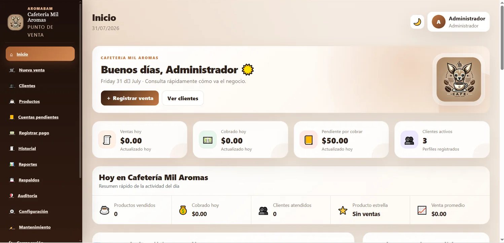
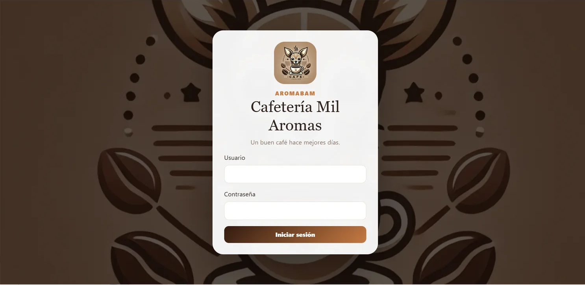
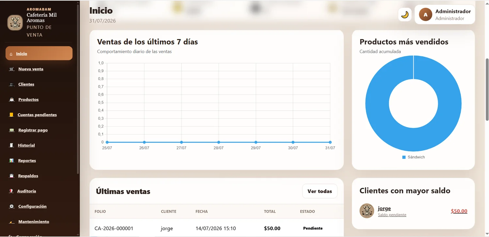
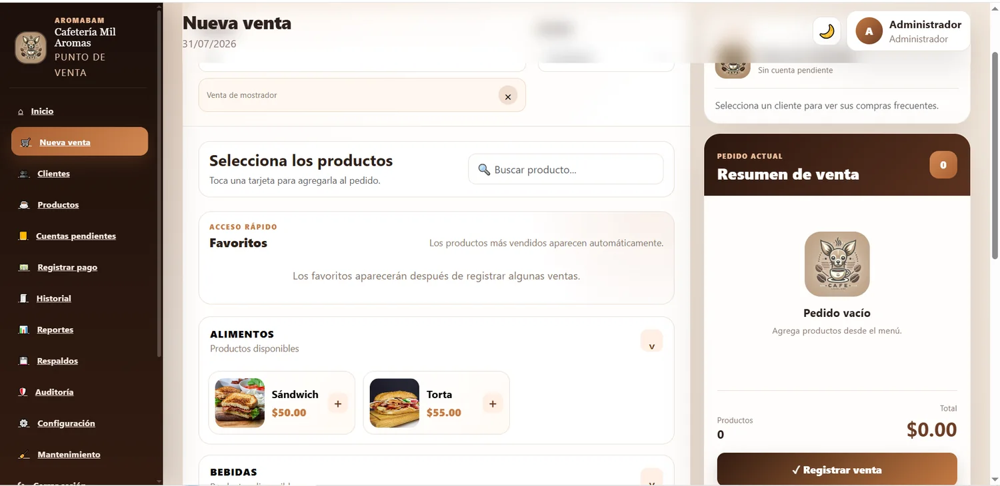
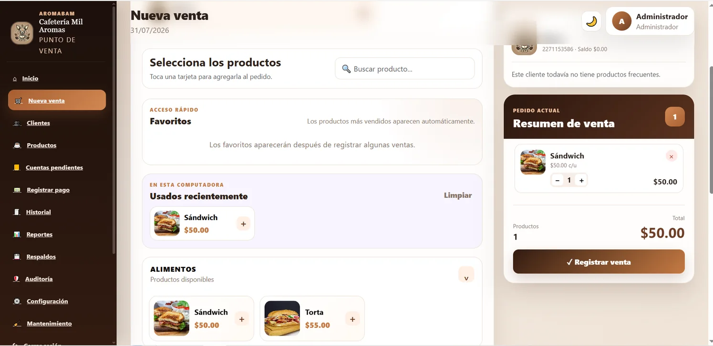
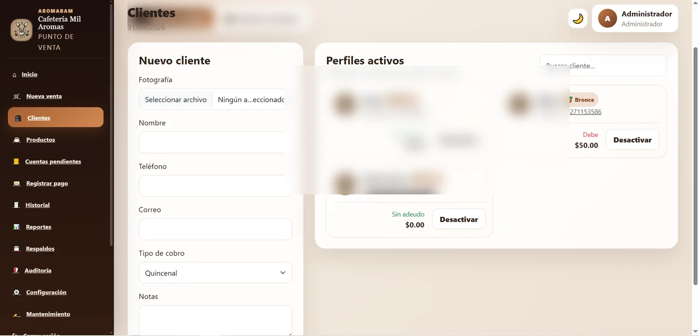
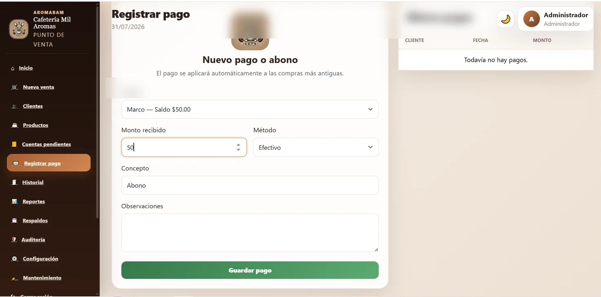
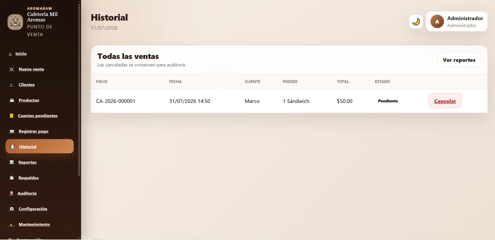

Problema
El negocio necesitaba llevar de manera ordenada las compras de clientes que pagan al final de la quincena o del mes, evitando cuentas en papel y errores en los saldos.
Plataforma web para administrar clientes, compras a crédito, abonos, adeudos, reportes y tickets en una cafetería.

El negocio necesitaba llevar de manera ordenada las compras de clientes que pagan al final de la quincena o del mes, evitando cuentas en papel y errores en los saldos.
Se creó un sistema con perfiles de clientes, registro de compras y abonos, historial, búsqueda rápida y generación de estados de cuenta.
Estas capturas muestran el flujo principal: acceso, panel administrativo, registro de ventas, clientes, abonos e historial.

Acceso seguroInicio de sesión para el administrador.
AnalíticaVentas semanales, productos más vendidos y cuentas relevantes.
Nueva ventaCatálogo por categorías y resumen del pedido.
Pedido en procesoControl de cantidades, productos recientes y total automático.
Gestión de clientesPerfiles, tipo de cobro, estado de cuenta y búsqueda.
Pagos y abonosAplicación automática del pago a las compras más antiguas.
Cuenta pendienteHistorial de venta antes de recibir el pago. Cuenta liquidadaActualización automática del estado después del abono.